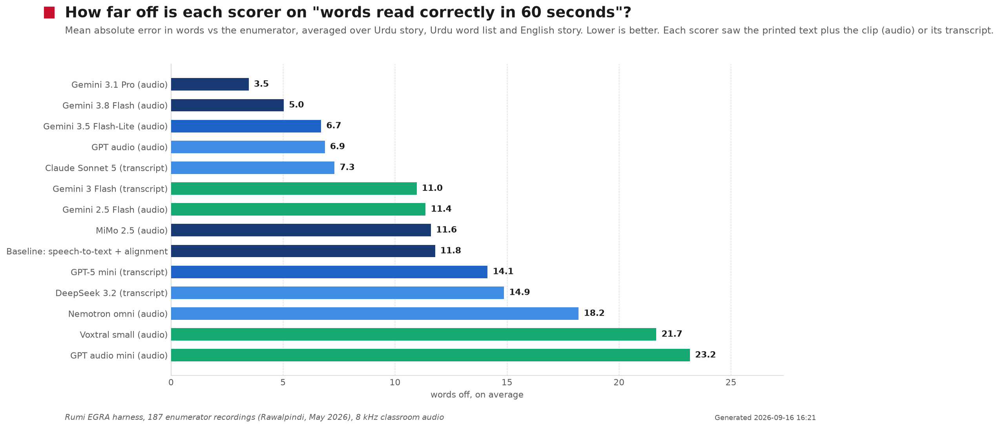
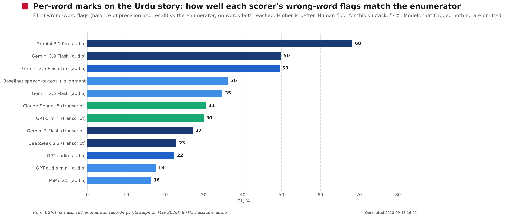
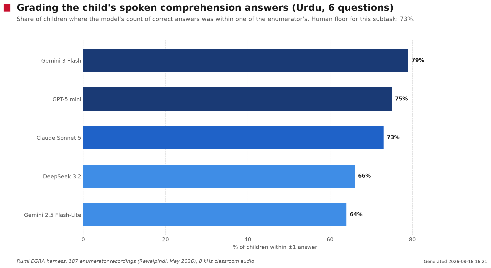

We want a coach to test a child's reading and maths in five minutes with a phone, have the computer do the marking, and have the coach check the marks before anything is saved. This page explains what that means, what we already know, what we tested, and what we plan to build.
Today, to find out how well a child reads and counts, a trained person called an enumerator sits with the child for about 20 minutes, shows them letters, words, a story and some sums, and ticks right or wrong on a tablet. That is slow, needs a specialist, and only happens once or twice a year.
We want our coaches (the people who already visit schools to watch lessons) to do a shorter version with five children per visit. The coach records the child on the phone, the computer listens to the recording and fills in the marks, and the coach looks at the marks and corrects any that are wrong before they are saved. We keep both the computer's marks and the coach's corrections, plus the recording, forever.
Why bother? Because if the test is short enough to run every few weeks, we can see whether a child is improving during the year, not just at the end. And because a recording can tell us far more than a tick box: how fast the child reads, which words they trip on, whether they correct themselves, how long they pause. Nobody can write all that down live. A computer can.
Every term is explained again where it first matters, but here they all are in one place.
In April and May, 28 enumerators tested 2,233 children in 99 Rawalpindi government schools with the full EGRA and EGMA in Urdu and English on tablets. The tablet software (SurveyCTO) recorded every session's audio and every tap: which letter the child got wrong, how many seconds were left on the timer, the answers to the questions. That whole export is in the Drive folder you shared, along with 207 of the recordings.
On top of that, seven reviewers later listened to 588 of those recordings and marked, subtask by subtask, whether the enumerator's score was right. So for each recording we have two human opinions: the enumerator's live marks and a reviewer's second opinion.
The middle child took 21 minutes: about 6 minutes of Urdu, 7 of English, 6 of maths. Three subtasks are 60-second timed reads that cost about 68 seconds each with instructions. Listening comprehension is slow because the enumerator reads a story aloud twice. The maths speed grid is the single longest part.
The child cannot read faster. The time saving has to come from three places: the coach stops tapping every item (the computer marks instead), we keep the stop rules so a child who cannot read letters is not made to attempt the story, and we choose which 60-second windows to keep. A full EGRA alone is 15 to 20 minutes by design, so a five-minute test is a deliberate selection, not a speed-up.
In August we built a WhatsApp ASER tool. On 11 September the Rawalpindi field team said no: it asked one question per message, took 10 to 15 minutes per child, needed internet in schools that have none, and they did not trust the AI on Pakistani accents. Since then a "human decides" mode and a correction button have shipped. The one-question-per-message shape and the need for internet have not changed. This plan removes both.
"I want to invest in a better test. I'm not happy with ASER. More granularity is the need of the hour."Haroon, alignment call, 25 minutes in
The call's recording was stuck in our meeting system (the row was marked private and the processing job had stalled), so I pulled the recording out and transcribed it. The decisions, with where they were said:
What each well-known test contains, how it is run, and what it is good and bad at, so you can judge which items we keep. Longer versions with sources are in the research folder.
Listen to a story and answer questions; name 100 letters in a minute; say the first sound of words; read 50 made-up words in a minute (this checks decoding without memory); read 50 real words in a minute; read a story for a minute and answer 3 to 5 questions. Stops early if the first line is all wrong. Result: letters and words correct per minute. Urdu versions exist.
Good: the speed numbers move within months, so progress shows. Bad: long; the letter part is the noisiest.
Read 20 numbers in a minute; say which of two numbers is bigger; fill the missing number in a sequence; quick addition and subtraction for a minute each; harder sums with paper allowed; six word problems. The child must say the answer, pointing does not count.
Good: separates children who know facts from children who count on fingers. Bad: some parts have only 5 items, so they are unreliable on their own.
A ladder: nothing → letters → words → paragraph → story. Pass a rung by getting 4 of 5 right. Maths: 1 to 9 → 10 to 99 → subtraction with borrowing → division. Result: a level name.
Good: cheap and governments understand it. Bad: a child can improve a lot and stay on the same rung, so you cannot see change during a term.
26 maths items across numbers, operations, patterns, shapes, measurement and reading a chart. Gated: harder sets only if the easier one is passed.
Good: covers shapes and data that EGMA skips. Bad: nothing is timed, so no speed measure.
Urdu and English: match a picture to a word, join letters into a word, plurals, fill the verb, pick the picture for a sentence, fill gaps in a paragraph, write three sentences. Maths: sums with carrying, missing numbers, bigger or smaller, odd or even, times and division, fractions, word problems. Each class stops at its own page. Sorts children into KG / Class 1 / Class 2 / Class 3 groups.
Good: it is the grouping Islamabad and KP classrooms already use. Bad: it tests writing as much as reading; nothing is read aloud or timed; far too long for us. We should map our results onto its groups, not adopt it.
Letter naming, breaking words into sounds, made-up words, real words, a story, each in one minute. Proof that a full picture of a young reader fits in five minutes.
Good: the template for "one minute per skill". Bad: English only.
All produce the same things from a read-aloud: words per minute, accuracy, a list of mistakes by type, and a per-skill report for the teacher. Read Along has Urdu.
Good: shows what word-by-word output looks like. Bad: English first; their accuracy claims are not independently checked.
LND: seven multiple-choice questions on a tablet for seven children per school per month. NAT: a grade-4 paper test. Sindh 2024: a government-owned Urdu EGRA on 7,248 children, five subtasks.
Good: legible to officials. Bad: none measures reading speed at scale.
Follow one child. Ayesha is in grade 3. Her coach has just finished recording a lesson in her class.
Ayesha's Urdu voice note is two minutes long. Here is what happens to it, in order.
We took every one of the 187 study recordings that has both a child's tablet scores and a reviewer's re-listen, and ran the candidate pipeline and every model we were considering over them. This is the "evaluation harness": a set of numbered scripts anyone can rerun, with every model reply cached. The full record, one table per task with every scorer we tried, is the evaluation page; twelve worked examples show, for real windows, the printed text, the clip, the transcript, the enumerator's marks and every model's per-word verdicts side by side. Total model spend for the whole evaluation was about $70.
Two layers. The enumerator's live marks from the tablet: for every letter, word and story word, whether the child got it right, plus the counts and timer readings. And the reviewer's second opinion: someone listened to the recording afterwards and marked whether each of the enumerator's scores was right, wrong, or impossible to tell from the audio.
Before judging any computer we asked how often the two humans agree with each other. On letters and maths, about nine times in ten. On the timed word lists and the story, only 51 to 62 percent of the time: the recordings are noisy phone-quality audio from real classrooms, and even a trained human cannot always tell what a child said. So on those tasks the fair target for a computer is "as good as the second human", not perfection. That floor is printed beside every number on the evaluation page.
| Task | Second human agreed with the enumerator | Best scorer we found, and how close it gets | Verdict | |
|---|---|---|---|---|
| Urdu word list (60 s) | 51% | Gemini 3.1 Pro listening to the clip with the printed text: within 5 words for 97% of children, 1.6 words off on average; per-word flags right 3 times in 4. Gemini 3.8 Flash: within 5 for 86%, 3.8 words off, at a sixth of the price. Transcript + alignment: 8 words off. | counts and chips ready | |
| Urdu story (60 s) | 54% | Gemini 3.1 Pro: within 5 words for 88%, 2.8 words off; per-word flags right 56% of the time (F1 66). Gemini 3.8 Flash: 74% within 5, 5.5 words off. Transcript + alignment: 16 words off, always under-counting. | counts ready, chips as suggestions | |
| English story (60 s) | 62% | The hardest input we have (accented child English on 8 kHz audio). Counts: Gemini 3.8 Flash and GPT audio 4 to 6 words off. Per-word flags: SpeechAce is the best at right about 4 times in 10 (twice the Gemini models), and it names the mispronounced sound. | counts ready, chips from SpeechAce as suggestions | |
| English pseudowords | 52% | Most children read 0 to 5; transcript + alignment is within 5 for 91%. | counts ready | |
| Letters, Urdu / English | 89% / 90% | The window itself was lost 62 to 84 percent of the time: letter names come back in three scripts. No model tested cleanly. | coach marks | |
| Urdu comprehension (6 questions) | 73% | A text grader on the transcript: within one answer of the enumerator for 79% of children (Gemini 3 Flash, a tenth of a cent per child); Claude Sonnet 5 and GPT-5 mini 73 to 75%. | ready | |
| Maths word problems (question spoken) | 87% | Grader on the transcript: within one item for 63 to 74% (Claude Sonnet 5 best, Gemini 2.5 Pro and 3 Flash close). | ready with the item bank | |
| Maths number reading (stimulus on paper) | 81% | Not gradable from audio alone (0.27 to 0.40 correlation); the product knows the numbers shown, so it becomes a closed-vocabulary match. | needs the item bank | |
| Finding the 60-second window | — | Speech-to-text timestamps plus a text labeller: 70% of subtask starts within 15 s of the enumerator's tap, timed windows back at a median of 60 s; the cheap labellers (Gemini 3 Flash) match the expensive ones. Audio models' own clocks drifted 20 to 75 s. | design rule: STT cuts, LLM labels |



Give the model the clip and the printed text, and counting is solved. Gemini 3.1 Pro and 3.8 Flash, listening to the 60-second clip with the exact text in front of them, land within five words of the enumerator for 74 to 97 percent of children, on poor audio, for one to six cents a window. Transcript-only methods, whether alignment or a text model, under-count by 8 to 20 words because speech-to-text drops words the child did say.
Per-word chips are usable as suggestions, not marks. The best model's flags are right two-thirds of the time on the Urdu word list and just over half on the story; every other scorer is well below that. Chips appear where the model and the alignment agree; elsewhere the coach decides.
Cheap models are not interchangeable with expensive ones here. GPT audio mini, MiMo, Nemotron and Voxtral were 12 to 23 words off; Gemini 2.5 Flash waved mistakes through. Gemini 3.5 Flash-Lite is the surprise: nearly as good as 3.8 Flash on counts at a third of the price.
About 10 cents per child for the full five-minute test with Gemini 3.8 Flash on every window plus the graders; about 25 cents with Gemini 3.1 Pro on the Urdu windows. Both are far below the roughly 43 cents a coaching session costs today.
Everything comes from one thing: a word table, one row per word the child was supposed to read, with when it started, when it ended, whether it was right, and how sure the computer is. Build that first and store it; every measure below is a calculation on it. Ranked by how useful it is to a coach, how strong the evidence is, and how hard it is to build.
| What we can measure | In plain words | How well established | When |
|---|---|---|---|
| Words correct per minute, accuracy | The standard reading-speed number | Machine and human agree at 0.96 in US national testing; 0.97 in our experiment | version 1 |
| Did the coach follow the script? | Story read twice? No hints during the timed minute? Timer honest? | Caught a slip a human reviewer missed; testers are known to make such errors often | version 1 |
| Was the room too noisy? | A quality flag so we know when to trust the marks less | Recognition errors triple in loud rooms | version 1 |
| Pauses | Does the child pause at full stops (good) or in the middle of phrases (struggling)? How long before the first word? | Pause patterns alone explain over half of the speed differences between children, and predict later comprehension | version 1, shown as information, not a score |
| Types of mistake and self-corrections | Skipped words, added words, wrong words, repeats; and how often the child fixes their own mistake (a good sign) | Self-correction predicts progress in large studies; our per-word accuracy is not yet good enough | version 1 counts for English · version 2 Urdu |
| Effortful decoding | Sounding out letter by letter, restarting words, long pauses inside a word | Standard idea; no published reliability yet | version 2 |
| A speed with an error bar | Instead of "31 words", "31 give or take 6", and fairer comparison across different stories | Needs each child to read 3 or 4 short passages over time; well-published statistics | version 2, but design the stories for it now |
| Comprehension in any language | Mark spoken answers even if the child answers in Punjabi | AI marking of short answers matches human markers | version 1 |
| Maths: remembering vs counting | How long the child takes to answer 7 + 5, and whether you can hear them counting | Strong theory; testers already tick "used fingers"; no automated version exists yet | version 2, as a check on the coach's tick |
| Types of maths mistake | Off by one, wrong place value, did addition instead of subtraction | Useful hints for the teacher; never a score on their own | version 1 |
| Which numbers trip the child | Teens, decades, three-digit; Urdu has a separate word for every number up to 99 | Well described for other languages; Urdu is our hypothesis | version 2 |
| Expression | Does the child read like they are talking or like a robot? (The US test scores this 1 to 4) | Computers now agree with humans more than humans agree with each other on this; no Urdu data yet | version 2 English, research for Urdu |
| Phonics gap map | Which letter-sounds a child, or a whole class, cannot map: the thing a teacher should teach tomorrow | One US product ships it; sound-level recognition is still error-prone in noise | version 2 for a class · research per child |
| The written maths photo | Final answers now; later, reading tally marks and working; never penalise a reversed digit under age 7 | Handwriting reading works; reading strategy from working does not yet | version 2 |
| Fairness report | Does the computer mark Punjabi- or Pothwari-accented Urdu harsher? Accepted-pronunciation lists built from our own recordings | Well-known problem in speech recognition; the fix is known | version 1 report · version 2 lists |
| Not doing: reading the child's mood, second-by-second tiredness curves, grammar of the child's speech | Measurable, but no evidence they say anything about the score, and they punish shy children | research only |
A fair question is whether marking maths from speech is even normal. It depends on what the item is measuring, and the standard tests already split the same way.
Speaking is the norm for speed items. EGMA insists the child says the answer for number reading and for the one-minute sums, because these measure how quickly a child retrieves facts. A grade-1 child writes so slowly that a written version would measure handwriting, not maths. ASER and ICAN are spoken throughout. Our experiment confirmed spoken answers can be marked when the question is spoken too (word problems 0.70), and number reading becomes easy once the computer knows which numbers were shown, which it will in the product.
Writing is the norm for computation. EGMA lets the child use paper for harder sums; the TIP test, LND and NAT are entirely written; and the child's working (tally marks, carrying) is evidence a recording cannot capture. A photo also costs the coach nothing: the child writes six items while the coach fetches the next child.
So: both, split by what the item measures. Speak the number reading and the timed sums; write the two-digit sums and one word problem, photographed once. AI can read children's final answers from a photo well today; reading their working reliably is a version-2 goal, and we should test 50 real sheets before trusting either.
| Maths item | How captured | Why |
|---|---|---|
| Read 8 numbers aloud | speak | Speed matters; the computer knows the numbers |
| Which number is bigger | speak | The test rules say say, not point |
| One-minute quick sums | speak | A speed measure; hearing counting reveals strategy |
| Two-digit sums with carrying | write + photo | The working is the evidence; no coach time |
| Word problems | speak the answer, optionally photo the working | Coach reads the question; AI marks; photo shows method |
| Patterns, shapes, time | photo or drop | Not a speed item; older grades only |
Do not start by asking which EGRA parts to cut. Start by asking what a five-minute recording can contain. One 60-second story read gives speed, accuracy, mistake types, self-corrections and pauses; add three questions and it gives comprehension. That one window already carries more detail than the whole ASER ladder. So the rule is: spend the minutes on windows that yield many measures, use stop rules so every child works at their own level, and keep every timed window at the full 60 seconds so our numbers stay comparable with the published Urdu benchmarks. Detail comes from measuring more per window, not from squeezing in more windows.
Two departures from the original brief. Five minutes is the test, not the visit: walking a child in and out adds a minute, and the 30-minute promise absorbs it. And the 100-letter grid should be a fallback rung, not the default: it is where both humans and computers are weakest, and a child who can read the story has proven the letters.
| Block · one voice note each | What the child does | Seconds | Stop rule | What we learn | Can the computer mark it now? |
|---|---|---|---|---|---|
| Urdu about 2 min | Read a 60-word grade-2 story for one minute | 60 | Fewer than 5 right in the first line → switch to 10 letters (20 s) and 10 words (30 s) instead | speed, accuracy, mistakes, self-corrections, pauses | counts yes, chips as suggestions |
| Answer 3 questions about it | 25 | only if at least one line was read | understanding; language of answer | yes | |
| Say the first sound of 5 words | 20 | skipped on the letter branch | sound awareness | coach marks | |
| Read 5 made-up words | 20 | readers only | decoding without memory | coach marks | |
| English about 2 min | Read a short grade-level story for one minute | 60 | Fewer than 5 right in the first line → 10 words (30 s) and 10 letters (20 s) | as Urdu, plus sound-level detail once Azure is fixed | counts yes |
| Answer 2 questions | 20 | only if at least one line was read | understanding | yes | |
| Read 8 made-up words | 30 | readers only | decoding; our experiment marked these within 5 for 91% of children | yes | |
| Maths about 1.5 min + a photo | Read 8 numbers aloud | 25 | 4 wrong in a row → stop the block | number knowledge, which numbers fail | yes, with the item bank |
| One-minute quick sums, answers spoken | 60 | timed | sums per minute; counting vs knowing | yes | |
| 4 written sums + 1 word problem, done while the coach fetches the next child; one photo | 0 coach time | grade 2 and up | answers now, working later | photo, answers only | |
| Child time | about 330 | Plus about 30 seconds of moving between blocks. Today's enumerator takes about 8 minutes for the same content. Five children with swaps: about 30 minutes. | |||
We reuse exactly how the lesson-observation form works today. The computer's answer is saved once and never changed (version 1). The WhatsApp form opens pre-filled from it. The coach's edits are saved as version 2 with a note of what changed. Only the coach who did the assessment can submit it.
Two changes for children: the form is per child, not per lesson, and each edit is saved item by item, because we need to know exactly where the computer was wrong in order to improve it.
Each screen is one block. Each subtask row shows the computer's count; the coach taps to change it. Where the computer was confident, the words it marked wrong appear as chips the coach can flip. Where it was not (letters, first sounds, and all per-word marks in version 1), the row says "listen and mark" with the clip attached. A "manual mode" switch lets a coach mark a whole block themselves; the audio is still recorded and marked in the background so we can keep measuring the computer.
Red chip = the computer marked it wrong. Yellow chip = the coach changed it. "Listen & mark" = the computer was not sure enough; the coach decides.
Good news: our database already has the right shape, built for the August ASER tool. We add no new tables for version 1, only a few columns. In plain terms:
| What we need to keep | Where it already lives | What we add |
|---|---|---|
| The session: which coach, child, grade, school, region, done or not | the aser_sessions table | a flag saying this was the five-minute test, and a link to the lesson observation it followed |
| Each reading window: the text shown, the recording, the transcript, the word table, counts, speed, time | the reading_assessments table (one row per window) | new names for the new window types; the start and end second of the window; the word table with a mark and confidence per word |
| The computer's answer next to the coach's answer, who decided, and the difference | columns already exist (rumi_level / coach_level and friends) | one extra field listing every item the coach changed, with before and after |
| The maths photo and its answers | the numeracy_assessments table | per-item answers from the photo |
| The recordings themselves | the R2 file store | file names that include school, session, child and block; uploaded immediately, never left on WhatsApp |
| Reports for the team dashboard | an existing summary view | the new subtask columns and the coach-quality fields |
There is no single "the AI". Different tools do different jobs, and the evaluation decided which. Costs are per child for the five-minute test.
| Job | Tool we will use | Why, in one line | Fallback | Cost |
|---|---|---|---|---|
| Cutting the audio into subtask windows | The coach's cue phrase per block, plus speech-to-text timestamps (Soniox told the language is Urdu; Whisper told the language is English) | Speech-to-text clocks were exact to the second; every audio AI's own clock drifted by up to 75 seconds | A cheap text labeller (Gemini 3 Flash) on the transcript when a coach forgets the cue phrase | 1 to 2 cents |
| Counting words read correctly in 60 seconds, Urdu and English | Gemini 3.8 Flash listening to the clip with the printed text; Gemini 3.1 Pro on the Urdu windows where a second opinion is worth six times the cost | Best agreement with the enumerator of everything tried, and it also gives per-word marks | Speech-to-text plus alignment if the audio model is unavailable | 1 cent per window (Pro: 6 cents) |
| Per-word chips on the checking screen | The same Gemini verdicts, shown only where the model and the alignment agree | Their flags are right about half to two-thirds of the time, the best measured but well short of a mark | The coach marks the word | none extra |
| Letters and first sounds | The coach marks; the audio is kept for a later open forced-alignment model | Letter names transcribe in three scripts; no scorer tested cleanly | — | none |
| Marking spoken comprehension answers | A text grader (Gemini 3 Flash tier) on the transcript with the passage | Within one answer for about 8 in 10 children at a tenth of a cent | Claude Sonnet 5 or GPT-5 mini, same result at higher cost | under 1 cent |
| Spoken maths | Transcript plus the item bank plus a small number-word dictionary; a text grader only for word problems | Word problems within one item for about 7 in 10 children without the bank; number reading needs the bank, which the product has | The coach marks | under 1 cent |
| The maths photo | Gemini 3.1 Pro vision with the answer key | Best on handwriting benchmarks; not yet tested on our answer pages, so we probe 50 first | The coach marks | 1 to 2 cents |
| English per-word marks and sound-level detail | SpeechAce, two 30-second calls per window, plus its made-up-word endpoint | On English its per-word flags were the best we measured (right about 4 times in 10, twice Gemini's rate), its counts are on par, and it is the only scorer that names the mispronounced sound. Azure is dead and not worth regenerating. | Gemini 3.8 Flash counts with the coach marking chips | about 3 cents per window |
| Checking the coach followed the script | A Gemini-class audio model over the whole block, once, in the background | Caught a slip a human reviewer missed | — | about 5 cents |
No dates. Each step starts when the one before it is done and has proved itself.
audio_durations.py — ffprobe every recording, join to the child index + coach reviews, write audio/_audio_index.csv and print baseline stats. baseline_timings.py — Baseline: how long enumerators took per subtask and per child, from the SurveyCTO export. build_site.py — Build the self-contained GitHub Pages site for the EGRA-in-five-minutes plan into ./site. download_drive_audio.py — Download every file in the shared EGRA/EGMA enumerator-recordings Drive folder into ./audio. download_tips_folder.py — Download the TIPS assessment Drive folder into ./tips (Google-native files exported). harness/01_soniox_batch.py — Harness step 1: Soniox stt-async-v3 (diarised, hints ur+en) over every recording → harness/soniox/<file>.json harness/02_ground_truth.py — Harness step 2: extract per-child ground truth from the SurveyCTO export for the 206 matched recordings. harness/03_segmenter.py — Harness step 3: rule-based segmenter over Soniox diarised tokens. harness/03b_segmenter_llm.py — Harness step 3b: LLM-labelled segmentation on STT timestamps ("STT cuts, LLM labels"). harness/04_reference_reconstruct.py — Harness step 4: reconstruct the instrument's reference texts by consensus across children. harness/04b_reference_llm.py — Harness step 4b: reconstruct the reference stimuli with an LLM instead of positional voting. harness/05_human_floor.py — Harness step 5: the human floor. For every subtask, how often did the QA reviewer (second human, re-listening harness/06_reading_score.py — Harness step 6: Urdu + English reading scores from STT alone (the "cheap stack"). harness/07_maths_grade.py — Harness step 7: maths from speech. For each child, give a TEXT LLM the diarised transcript of the maths block harness/08_soniox_english_pass.py — Harness step 8: second Soniox pass on the ENGLISH block only, language hint 'en' only. harness/08b_whisper_english_pass.py — Harness step 8b: English block via OpenAI whisper-1 with language forced to 'en' + word timestamps. harness/09_english_azure_speechace.py — Harness step 9: English passage + word list — Azure Pronunciation Assessment vs SpeechAce vs Soniox-diff, harness/09b_speechace_eval.py — Re-score the cached SpeechAce responses properly: per-word verdict (quality_score < 60 = wrong) vs the enumerator's harness/10_window_scorers.py — Harness round 2, step 10: score the 60-second reading windows with the models we recommended but had not tested. harness/11_comprehension_grade.py — Harness round 2, step 11: grade the Urdu reading-comprehension answers with text LLMs. harness/12_round2_summary.py — Harness round 2, step 12: one table per experiment with the human floor and the Levenshtein baseline beside every harness/13_round2_charts.py — Harness round 2, step 13: house-style charts of the round-2 results for the board post and the site. harness/14_worked_examples.py — Harness step 14: worked examples — one page per scored window showing every artefact behind the score. harness/15_evaluation_doc.py — Harness step 15: write the ONE canonical evaluation record (harness/HARNESS_RESULTS.md) from every cached result, harness/_chain_after_segmenter.sh — harness/_patch_plan_eval.py — One-off: rewrite PLAN.html's evaluation and stack sections into the single combined record. harness/_patch_speechace.py — One-off: fold the corrected SpeechAce numbers and the Azure-vs-SpeechAce recommendation into the record. harness/_r2_audio.sh — harness/_r2_scale.sh — harness/_r2_seg_maths.sh — harness/_r2_text.sh — probes/probe1_segment.py — Probe 1: can an audio LLM segment an enumerator EGRA session into subtasks and extract the child's responses? probes/probe2_soniox.py — Probe 2: our production STT (Soniox stt-async-v3, Urdu hint, diarization) on the Urdu letter-ID slice. Run: uv run --with requests python probe2_soniox.py <wav> <lang> baseline_subtask_timings.csv — Per-subtask enumerator timings (seconds) harness/human_floor.csv — Human floor: reviewer agreement with the enumerator per subtask harness/reading_summary.csv — Reading counts: machine vs enumerator per subtask, with window-failure split harness/round2_windows.csv — Sixty-second windows: every audio and text model vs the enumerator, with baseline and human floor harness/round2_comprehension.csv — Comprehension graders vs the enumerator harness/round2_segmenter.csv — Segmenter labellers vs the tablet timestamps harness/round2_maths.csv — Maths graders vs the enumerator, by subtask harness/window_scores.csv — Per-window rows behind the sixty-second-window table (file ids only) harness/comprehension_scores.csv — Per-child rows behind the comprehension table harness/reading_scores.csv — Reading counts per recording window (file ids only) harness/reading_items.csv — Per-word machine vs enumerator flags (subtask, machine_wrong, enum_wrong) harness/segmenter_llm_google_gemini-2.5-pro.csv — Segmenter agreement with tablet timestamps per recording harness/maths_scores_google_gemini-2.5-pro.csv — Maths from speech: machine vs enumerator counts per recording harness/english_results.csv — English windows: SpeechAce and STT-diff vs enumerator per recording harness/segmenter_results.csv — Rule-based segmenter (v1) results Twelve real windows, each showing the printed text, the clip (Drive, team accounts), the transcript, the enumerator's marks and every model's per-word verdicts side by side.
AA_<uuid>_enumerator.m4a), the SurveyCTO export EGRA_EGMA client N=2233.xlsx (one row per child, 1,364 columns), and the reviewer workbook Data.xlsx (1,462 QA re-listens). These hold child data and are not copied into this repository.06_Logs & Misc/Reports/Active/EGRA Student Assessment - Sep 2026/ in the Rumi workspace.